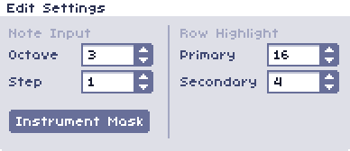

Edit Settings
The edit settings panel is located in the top-middle of the main screen, between the wave bank and song panel.
The settings are as follows:
| Setting | Description |
|---|---|
| Note Input | |
| Octave | Determines what octave newly inputted notes will be. This can also be changed using the left and right bracket keys, or the numpad / and * keys. |
| Step | Determines how many rows to step forward after inputting a note. |
| Instrument Mask | If this option is enabled, the current instrument will be ommitted from note inputs. |
| Row Highlight | |
| Primary | Every nth row will have the primary highlight. Usually this number is used to mark the beginning of measures. The default is 16. |
| Secondary | Every nth row will have a secondary highlight. Usually this number is used to mark every beat within a measure. The default is 4. |